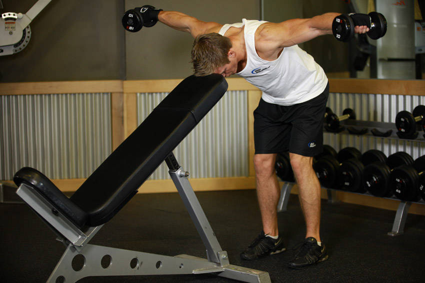

- Stand up straight while holding a dumbbell in each hand and with an incline bench in front of you.
- While keeping your back straight and maintaining the natural arch of your back, lean forward until your forehead touches the bench in front of you. Let the arms hang in front of you perpendicular to the ground. The palms of your hands should be facing each other and your torso should be parallel to the floor. This will be your starting position.
- Keeping your torso forward and stationary, and the arms straight with a slight bend at the elbows, lift the dumbbells straight to the side until both arms are parallel to the floor. Exhale as you lift the weights. Caution: avoid swinging the torso or bringing the arms back as opposed to the side.
- After a one second contraction at the top, slowly lower the dumbbells back to the starting position.
- Repeat the recommended amount of repetitions.
This exercise appears in Programmd training programs. Take the quiz to find one for your gym.
Find your program